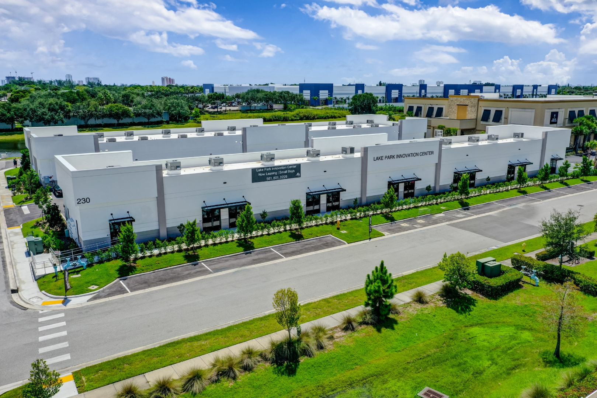

Commercial glazing systems are designed for 25 to 40 year service lives, but they rarely get there without active maintenance. In Florida's climate — UV, humidity, salt air, and seasonal storm exposure — the degradation pathways on sealants, gaskets, hardware, and IGU seals move faster than the glass itself ages. A preventive maintenance program turns what would be expensive emergency repairs into scheduled, predictable capital planning. This article lays out the maintenance calendar ACG recommends to facility managers and owners across Florida, with specific tasks at monthly, quarterly, annual, and multi-year intervals.

Why a Maintenance Schedule Matters for Commercial Glass
The difference between a commercial glazing system that reaches full 30-year service life and one that fails in 15 is almost always maintenance. Preventive maintenance — cleaning, inspection, and minor repair on a calendar — catches issues while they are low-end to fix. Deferred maintenance lets those same issues progress into failures that cost 10 to 50 times as much to resolve. The schedule below is what ACG recommends to facility managers and property owners across Florida, calibrated to the environmental factors that actually drive degradation in this climate.
Monthly Maintenance
Exterior Glass Cleaning
Commercial glass in Florida accumulates dust, salt film, and organic residue quickly. Monthly exterior cleaning (more frequent for coastal buildings within a mile of saltwater) prevents the accumulated grime from etching into glass surfaces and coatings. Use non-ammonia, pH-neutral cleaners — aggressive glass cleaners can damage low-E coatings and ceramic frit over time.
Ground-floor storefront can be cleaned by in-house maintenance. Upper-floor curtainwall requires professional window cleaning with rope access, swing stage, or boom lift — typically contracted to a window cleaning company on a monthly or quarterly cadence.
Visual Inspection for Cracks and Damage
A simple visual walk-around once a month catches obvious issues: cracked panels, damaged hardware, peeling sealants, or impact marks. For commercial buildings, even minor tempered-glass cracks can progress to full fracture without warning — nickel sulfide inclusions can trigger spontaneous breakage long after installation. Early detection means planned replacement rather than emergency response.
Quarterly Maintenance
Entrance Door Hardware Lubrication and Adjustment
Commercial entrance doors are operated 200–2,000 times per day depending on building type. Door closers, hinges, pivots, and locks all require quarterly service. Typical tasks:
- Lubricate closer and pivot mechanisms (manufacturer-specific lubricant)
- Adjust closer speed and latch tension for seasonal temperature change
- Inspect and tighten all hardware fasteners
- Check weatherstripping for wear and compression
- Verify panic hardware (if equipped) functions per code
- Confirm threshold and door sweep seal integrity
Neglected door hardware is the most common source of tenant complaints and the most common preventable failure mode. A door closer that is not adjusted properly will allow doors to slam, damage frames, and fatigue glass. Quarterly tune-ups cost $150–$400 per door and prevent repairs that run $500–$1,500 per incident.
Weather Seal Check
Walk the building perimeter and inspect all weather seals at a close-up level every quarter. Look for:
- Sealant peeling, cracking, or pulling away from substrate
- Gaskets hardening or extruding from glazing pockets
- Water staining on interior drywall indicating leak paths
- Insect or bird damage at accessible seals
Documenting findings in a simple inspection log allows trends to surface. If the same northwest corner is peeling sealant year after year, that area needs a different sealant product or reinforced flashing rather than repeated repair.
Annual Maintenance
Full Perimeter Sealant Inspection
Once a year, inspect the entire perimeter sealant — head, jambs, sill — across the full building. This is more thorough than the quarterly check. On buildings over three stories, this typically requires access equipment and a trained envelope technician rather than facility maintenance staff.
A licensed glazier can walk the full envelope, identify degraded sealant zones, and quote targeted sealant replacement. Catching sealant failures before water intrusion saves interior repair costs that can be many times the envelope repair cost.
Gasket and Glazing Pocket Inspection
EPDM and silicone glazing gaskets have service lives of 15–25 years in Florida. Annual inspection checks for hardening, shrinkage, and separation from frame or glass. Replacement is typically scoped as a project rather than a recurring maintenance item, but annual inspection catches the 25-year-old gaskets before they fail mid-storm.
IGU Condition Survey
Insulating glass units (IGUs) have seal-life ratings of 10–25 years depending on product. When the IGU seal fails, the unit fogs internally — first visible as an occasional morning haze that clears, then as permanent condensation and mineral deposits. An annual IGU survey identifies failing units and allows batch replacement scheduling rather than one-at-a-time emergency swaps. On buildings over 10 years old, 2–5% annual IGU failure is common. Over 20 years, that rises to 8–15% annually.
Flashing and Roof-Wall Interface Inspection
Water intrusion at the roof-wall interface is one of the most common and misdiagnosed building envelope problems. Annual inspection of head flashing, step flashing at roof returns, and coping-to-wall transitions catches issues before they migrate into wall cavities. On buildings with parapet walls, the parapet flashing is particularly vulnerable and worth close inspection.
Every 3 Years
Deep Sealant Re-Application
Perimeter sealant in exposed south and west elevations in Florida typically needs re-application on a 10–15 year cycle for silicone, 7–10 years for urethane. A three-year inspection cadence catches specific zones that have accelerated (water-pooling corner details, junctions against metal wall panels) and allows targeted re-application before full-envelope failure.
The pre-glazed advantage shows up here too. Factory-glazed units use tested interior glazing seals that do not require field re-application. The perimeter sealant around the unit is still field-applied and on the standard maintenance schedule, but the glass-to-frame seal inside the unit is factory-tested and typically outlasts the perimeter.
Hardware Deep Service
Every three years, pull entrance door closers for internal inspection or replacement. Fluid cartridges in hydraulic closers degrade over time; bearing surfaces wear. Replacement of high-wear components at this interval prevents in-service failures.
Every 5–10 Years
Major Component Replacement
Commercial entrance door hardware has full-replacement intervals of 7–12 years for high-traffic doors. Exterior perimeter sealant on the shaded elevations can last 20 years; on full sun exposure may need batch replacement at 12–15 years. IGU replacement programs for large commercial buildings typically hit 15–20% of units over a 10-year window — this should be budgeted as a capital item rather than emergency maintenance.
Florida-Specific Maintenance Considerations
Salt Air (Coastal Buildings)
Buildings within two miles of saltwater accumulate chloride deposits that accelerate aluminum and steel corrosion. Coastal buildings need monthly (not quarterly) full exterior washdown to prevent salt from establishing on the facade. Hardware in coastal environments needs more frequent lubrication and more frequent fastener inspection.
UV Exposure
Florida UV index runs among the highest in North America. South and west elevations see accelerated degradation of sealants, gaskets, and finishes. Maintenance programs for Florida buildings should weight south and west elevation inspection heavier than standard — literally double the frequency on high-exposure faces.
Hurricane Season Pre-Inspection
Before June 1 each year, a full envelope inspection confirms readiness for hurricane season. This includes verifying all hardware functions, all impact-rated openings are intact and code-compliant, and any temporary board-ups or compromised openings are fully restored. See our detailed commercial glazing inspection guide for the full pre-season checklist.
What Good Maintenance Saves
Industry data and our own project experience line up on this: commercial buildings with formal glazing maintenance programs extend envelope service life by 5–10 years over buildings with reactive-only maintenance. On a 50,000 SF glazing package with $2M replacement cost, that 5–10 year extension is $200K–$400K of deferred capital expense — roughly 10x the cost of the maintenance program itself.
Beyond capex savings, good maintenance reduces tenant disruption, protects interior finishes from water intrusion damage, maintains curb appeal and leasing value, and documents envelope integrity for insurance purposes. Many commercial insurance carriers now offer premium reductions for documented envelope maintenance programs.
Setting Up a Maintenance Program
ACG offers glazing maintenance contracts across our three-office Florida service area (West Palm Beach, Naples, Tampa). Typical scope includes quarterly hardware service, annual envelope inspection, and responsive repair pricing locked in for contract duration. See our services page for contract options, or contact the team to discuss a specific building's needs.
For ongoing context on common issues we find during maintenance, see common commercial window problems and how long commercial windows last in Florida.
Ready to get started?
ACG is a CGC-licensed Florida commercial glazing subcontractor (CGC1531993) with offices in West Palm Beach, Naples, and Tampa. Five years active, 350+ completed commercial projects, over one million installed square feet. Send plans and we return a detailed scope with system recommendations and 2026 pricing inside 48 hours.